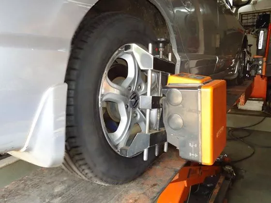

FAQs
Changing a car's tyre can make all the difference between a safe journey and an ill-fated one, as even well-maintained tyres eventually require replacement.
Tyres, being among the most perishable components in any automobile, are frequently underestimated and overlooked, despite the fact that even those who are fond of their cars and enjoy motoring may check radiator fluids and oil levels on a weekly basis, but tyres, other than the occasional air pressure check, are often neglected; therefore, taking care of your tyres is often as important as taking care of your car. While wheel balancing, alignment, and tyre rotation can help reduce general tyre wear, every tyre still needs to be replaced after a certain time, and the following are some indications that will tell you when you need a replacement.
Tread Depth

Tyres that appear visually worn are mostly required to be replaced, as indicated by modern car tyres that come with tyre wear indicators, providing an educated user with an immediate indication. Additionally, a more novice method is the 'One Rupee Test,' which can help determine if a tyre needs replacing. Here is a step-by-step guide for performing the One Rupee Test.
Step 1: Take a one-rupee coin and place it in every groove of the tire tread. This method will provide you with a quick estimate of the tread depth by assessing the depth to which the coin sinks.
Step 2: To ensure proper maintenance of your car's tyres, repeat this process for all tyres and see how deep the coin goes in every tyre. If the tread depth is consistent in each groove of the tyre and between all tyres, there is no need to worry. However, if there is a significant difference in the tread depth, it is a sign that your car is wearing away the rubber in that tyre. The best solution is to get the alignment and balancing checked to ensure the camber, caster, and toe are correct. According to the Central Motor Vehicle Rules of 1989 (CMVR), the non-skid depth (remaining tread depth) should not be less than 1.6 mm. However, this rule is not strictly enforced in every part of India as it is in most parts of America or Europe.
Wheel Alignment And Balancing
If you have irregular wear on one or more tyres, it is usually due to a misalignment of some sort in the suspension geometry. Irregular tyre wear and tear happens mostly due to driving on bad roads, and the best way to reduce it is by getting the wheel alignment and balancing checked periodically (as mentioned in the owner's manual of the car). If the owner's manual is not available, it can be done every 5000 km or when you notice the car is not able to maintain a straight line. However, even if a regular interval wheel alignment and balancing still makes your car wander on the road, it usually means that the tyres need replacing. Irregular wear can also happen due to frequent driving on hills. That said, as we mentioned earlier, this can also be caused if there is either suspension or axle damage. Get a thorough inspection done by an authorised dealership or a mechanic you trust.
Tyre Grip
One of the easiest ways to know that your tyres are due for a change is when they appear to run out of grip much earlier than what you have used, and another factor that signals irregular wear and tear of the tyre is when you feel a change while stopping the car. Three-wheeled brakes are a sure-shot signal that the tyre wear and tear is irregular.
There are primarily two scenarios in which three-wheeled brakes occur: when there is irregular tread wear on one of the tires, or when there is a problem with the brake hub of that particular wheel. Additionally, a driver can immediately tell if they need to change their tires when they experience high-speed cornering and feel the car start to slide or become twitchy suddenly, indicating that one or more tires have begun to give way.
After taking all factors into consideration, it is recommended to replace all four tyres of your car every five years or after they have covered 50,000 kilometres, as even well-maintained tyres eventually exhibit undeniable signs of wear; it is advisable to retain the best tyre from the previous set as a spare and if you frequently travel on highways, it is prudent to keep a second spare as well, filling your tyres with nitrogen instead of air can also help prolong their lifespan; furthermore, it is important to purchase tyres from a reputable brand rather than opting for a cheaper foreign alternative, even if it requires spending more money, since ultimately, the tyres are the only element that maintains your car's stability on the road, safeguarding the safety of you and your family.
Not replacing your tyres on time can be potentially hazardous in several ways, as worn-out tyres have a much greater chance of picking up stray punctures due to the sheer lack of tread material in the tyre itself, and tyres with worn-out treads greatly reduce your car's stopping potential in wet conditions. For example, a worn-out tyre would take almost 70% more distance to come to a complete stop as compared to a new or well-maintained tyre.
It is important to note that worn-out tyres pose a significant hazard when driven on wet or uneven surfaces. This is because the tread on a tyre is responsible for dissipating water or other liquids from the road, thereby ensuring maximum contact with the road surface and improving grip. When a tyre is worn-out, it loses its ability to dissipate water adequately, which can result in instances of aquaplaning. Aquaplaning can cause your car to lunge out of control in an instant, leading to potentially dangerous accidents. Therefore, it is imperative to double-check the condition of your tyres around the month of May or just before the annual monsoon season begins.
In cases where only two tyres are worn and the other two still have tread left, customers often opt to replace only the worn ones. However, it is advisable to install the new tyres at the rear, particularly before or during the monsoon season, as placing the worn tyres in the rear can cause oversteering during wet cornering and may lead to a loss of control over the steering.
Modern pneumatic tires are typically composed of natural rubber, synthetic rubber, fabric, steel wires, and carbon black, with the addition of synthetic chemicals such as silica to improve various characteristics. Tires commonly consist of a tread pattern and a body, or carcass, with the tread providing traction and the carcass serving as the foundational structure that holds the air.
Tyres can be segmented based on the following categories:
Based on construction
Cross Ply or Bias Ply
The casing of the tire is made up of multiple criss-cross textile plies that run from bead to bead at an angle to the rolling direction.
The TREAD is not stabilized.
The TREADS and SIDEWALLS are formed by the same ply structure.
When rolling, the tread is subjected to flexing, which causes::
- Deformation of the tread in the footprint area on the ground
- Friction with the ground
- pantographic movement between casing plies like a scissor
This Results in:
- Accelerated wear
- Less grip due to a lower footprint area on the ground
- Less road holding as TREAD is not stabilised
- increase in fuel consumption
- Heat buildup is due to the pantographic movement (scissoring effect) between the casing ply.
Radial Tyres
The casing is composed of one single steel ply, running from bead to bead at 90° in the rolling direction.
The tread is stabilised by a belt made up of several steel plys.
The tread and side walls function independently.
When rolling, the Tread is not affected by any flexing, and this helps in:
- Less deformation of the tread in the footprint area on the ground
- Less friction with the ground
- There is no pantographic movement as there is only one steel casing ply.
This Results in:
- Increased Tread Life
- Excellent Road Grip
- Better road holding & precise driving control due to stabilized tread
- Increase fuel efficiency
- Cooler running as there is no pantographic movement (scissor effect) between casing plies and no tread friction with the ground.
Based on a tread pattern
Summer Tyres
These tyres are specially designed to offer optimum performance in the summer. They come equipped with a block-shaped tread pattern for dry and wet grip. The rubber compound also offers good thermal resistance for improved tyre life.
Winter Tyres
These tyres possess deep grooves and blocky tread patterns that provide excellent grip on snow and ice. The pattern is designed to optimize a 'biting effect' for improved snow braking. Additionally, these tyres feature an innovative compound that maintains the warmth of the tyres, enhancing their traction.
All Season Tyres
As the name suggests, these tyres offer good year-round performance, but they may not perform well on excessively wet tracks or at extreme temperatures.
All Terrain tyres
The tyres are versatile and can be used both on-road and off-road, as they are equipped with a special tread pattern featuring large lugs that provide confidence on rough and unpaved roads, while also offering good traction on highways, and ensuring long tyre life.
Performance-oriented
These tyres are specially designed to offer high performance. They offer superior wet and dry traction, along with precise handling and effective braking. Since they are made up of soft rubber compounds, the tread life on these tyres isn't very high.

Example: 185/65/R 16 91V:
185 – This part represents the cross-sectional width of the tyre in mm.
65 – This part represents the aspect ratio of the profile in mm. 65 would mean that the sidewall height of the tyre is 65% of the width of the tyre, i.e. 65% of 185mm.
R – This part represents the construction type of the tire, where 'R' indicates a radial construction.
16 – It represents the rim diameter (wheel height).
91 – This part represents the Loading Index of the tyre, which is the maximum load-bearing capacity of the tyre (in kg). 91 means that the tyre is capable of bearing a load of up to 615 kg.
V – This part is indicative of the speed index, i.e., the maximum speed the tyre can achieve without getting damaged. V means a speed rating of a maximum of 240 km/h.
For optimal all-around performance, it is not recommended to mix tire brands because each brand employs different construction techniques and incorporates distinct technologies, and the tires may also have varying wear stages. Therefore, it is advisable to ensure that all tires used are of the same brand and specifications.
For optimal all-around performance, it is highly recommended to ensure that all tires are identical to each other in terms of brand, tread pattern, dimension, loading index, speed rating, and construction type.
Unless specified by the vehicle manufacturer, it is strongly recommended to ensure that all four running tires are of the same size and construction type, that is, all four radial or all four bias-ply types.
For proper handling and ride comfort, it is recommended to have all tires of the same type, either all tubeless or all tube-type.
The vehicle manufacturer always suggests the optimal air pressure for the tires, which is usually indicated on the inside of the front doors or B-pillar, as well as in the vehicle manual.
The manufacturing date of the tyre is indicated on its sidewall in the form of a DOT number, where the last four digits of the DOT correspond to the manufacturing week and year. For instance, if the last four digits of the DOT are 1217, it indicates that the tyre was produced in the 12th week of the year 2017.
While replacing all 4 tyres is recommended for optimum safety and traction, if you are only replacing 2 tyres, it is better to have them installed on the rear axle. This is because on wet or slippery surfaces, worn-out rear tyres could cause your vehicle to slide into a 'fishtail,' and regaining control through the steering wheel may not be possible.
Tyre valves have a rubber base that may become brittle over time, and the valve stem can also weaken with age. Therefore, it is advisable to replace the tyre valves every time you change a tyre to prevent any unintended air leakage.
Keeping your vehicle's tyres properly inflated is one of the ways to save fuel, as under-inflated tyres require more energy to rotate, leading to higher fuel consumption. With people's requirements in mind, Ceat has developed a fuel-smart tyre that is fuel-efficien

Proper maintenance of tires would not only enhance the tire's life but would also help them resist punctures, offer superior performance, and provide a comfortable and quiet ride quality. To take good care of your tires, you should follow these ways: maintain optimum tire pressure, ensure proper wheel alignment, balance the wheels correctly, rotate the tires regularly, and check for cuts and abrasions regularly. Additionally, it is essential not to exceed the loading index.
Wheel alignment is a crucial aspect that ensures the proper handling of a vehicle and even tread wear; a vehicle is deemed to be appropriately aligned only when all the suspension and steering components are functioning efficiently and the wheel assemblies are running straight and true, and it's important to note that signs that indicate a problem with wheel alignment include uneven tread wear, altered steering response, and the vehicle pulling to one side.
Improper wheel balancing is caused by uneven weight distribution on the wheels, which leads to uneven rotation of tires, resulting in annoying vibrations, tire wobbling, and uneven tread wear. Wheel balancing ensures that the correct weights are added to the tire rims to balance them and provide a smooth ride. Therefore, it is essential to have your wheels balanced every time you get new tires fitted.
Practicing tyre rotation every 5000 km is recommended to ensure even tread wear on all 4 tyres, as tyres on one axle can wear faster than those on the other due to different driving habits, frequent braking, or uneven weight distribution.
Keeping the tyres at their optimum air pressure is one of the easiest and most effective ways to take proper care of the tyres, offering several benefits. Firstly, it ensures safety by preventing under- or overinflated tyres, which are often the cause of tyre blowouts and reduce the vehicle's braking efficiency. Secondly, appropriate air pressure ensures a uniform contact patch with the road surface, leading to optimum performance and uniform wear, thus enhancing the tyre's tread life. Thirdly, it results in better fuel economy as under- or overinflated tyres require more power to be brought into motion. Fourthly, handling tyres with the correct pressure ensures precise handling and steering response. Lastly, tyres with the correct air pressure offer confident wet and dry grip as they grip the tarmac well.
Nitrogen, being an inert gas with non-reactive chemical nature, does not undergo any changes in property with a change in temperature range, making a tyre inflated with it less likely to quickly deflate due to the low permeability of the gas, and also assisting in keeping the tyre cool, especially during long highway runs.
Tyres usually have a shelf life of about 5 years, during which they are exposed to variable temperatures and UV rays, resulting in micro-cracks on the tread and sidewall. If such a tyre is used, it can cause frequent punctures and blowouts. Therefore, it is crucial to use the spare tyre as a regular tyre with proper tyre rotations. Failure to do so may require the replacement of the spare tyre after 5 years, even if it has not been used.
A bulge or bubble in the tire sidewall may be the result of damage from contact with a curb, pothole, or other object, or it could be caused by faulty tire construction. This type of damage is typically irreparable and necessitates a tire replacement, but it is recommended to have the tire examined by an authorized tire outlet.
While a flat tyre is usually the result of driving on rough surfaces or a tyre being pierced by a sharp object, poor maintenance of the tyre can also result in frequent punctures. To solve this issue, it is important to keep the tyres properly inflated, as under-inflated tyres tend to fail often. Additionally, using tyres that are older than 4-5 years can also cause frequent tyre punctures. However, Ceat has launched its range of puncture-safe tyres, which come lined with a special sealant to prevent punctures.
Although it is recommended to replace all four tires for optimum safety and traction, it is acceptable to replace at least two tires; however, it is advisable to install new tires on the rear axle for better performance.
Due to uneven or irregular tread wear, tyres often produce noise which may be a result of inadequate wheel balancing or improper wheel alignment, therefore, it is advisable to have your tyres checked at an authorized CEAT outlet for optimal performance.
Vibration, which is usually caused by improperly balanced wheels, requires immediate attention. If the vibration persists even after proper balancing, then the fault could pertain to a faulty steering or suspension system.
This is a classic symptom that indicates your vehicle requires proper wheel alignment.
Absolutely! Your choice of tyre and tread pattern is greatly influenced by your driving style. If you have a more aggressive and spirited driving style, it is recommended to select high-performance tyres as they provide excellent braking efficiency and superior handling. Conversely, if you primarily drive on highways and well-paved roads, opting for highway terrain tyres is advised, as they offer a comfortable, quiet, and safe ride.
Tyre selection is mainly based on the following factors: vehicle type, application/use, tyre rim combinations, speed and driving conditions, type of tread design and wheel position, and load.
While it is not compulsory to adhere to the original equipment fitted tire, you have the option to choose tires that better suit your requirements. Nevertheless, please ensure that the tires you purchase have a compatible size and specification with your vehicle.
We highly recommend that you buy tires from an authorized CEAT dealer.
Upsizing the tyres involves replacing the original tyre with a wider one that has a lower profile, while maintaining a permissible diameter difference with the OE-fitted tyre. This practice typically leads to better road grip, high-speed stability, improved traction, cornering grip, steering response, and aesthetics. However, it also increases the chances of tyre and rim damage from road hazards, raises the cost of tyres and rims, and requires approval from insurance companies due to the heightened risk of contact with wheel arches.